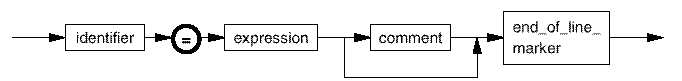

Derived specs
An equation set contains zero or more equations, each of which is defined according to the following syntax:

spec_name |
An identifier (see Common Syntax Elements) defining the derived spec name. This is the name by which the derived spec (equation) is referenced throughout the equation set. |
expression |
See Syntax of expression. |